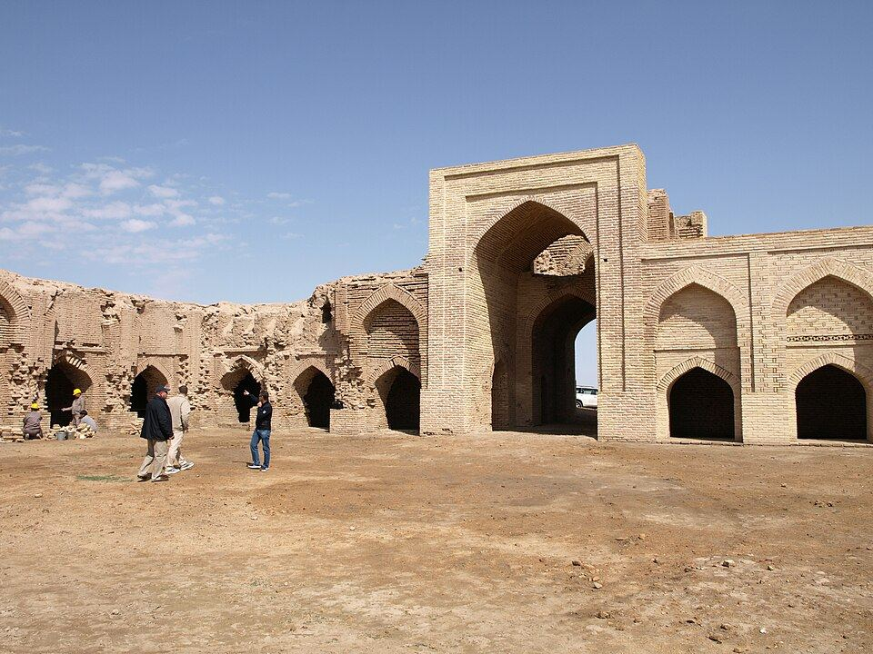
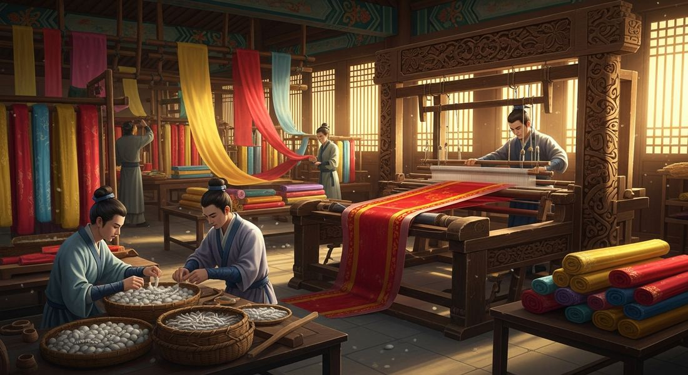
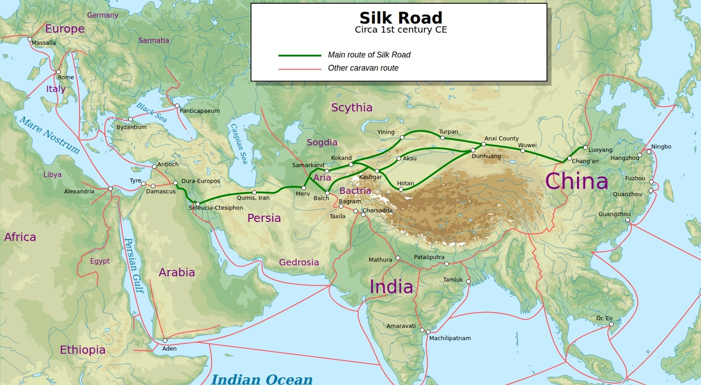
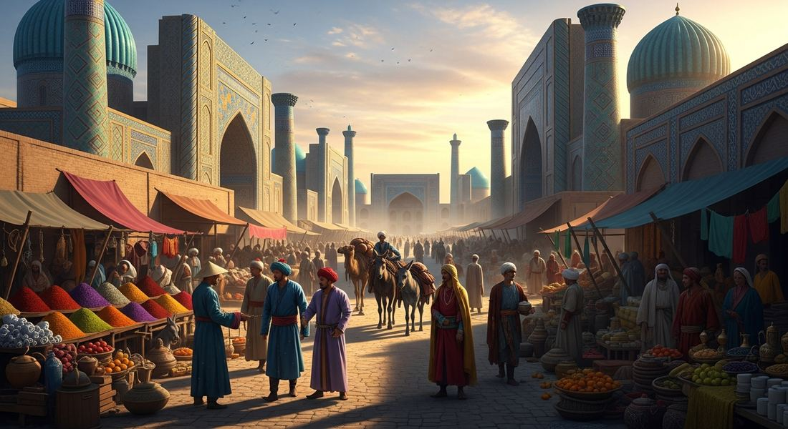

2.1 The Silk Roads
- LO-A: LO: Causes of Silk Road growth after 1200: Three factors drove expansion: (1) infrastructure, caravanserais spaced every 20–30 miles made overland travel survivable, and camels could carry heavy loads for weeks without water; (2) commercial innovation, bills of exchange let merchants deposit coin in one city and collect it in another, eliminating the danger of carrying currency across bandit-filled routes; (3) political stability, the Pax Mongolica (c. 1250–1350) unified Central Asia under Mongol rule, dramatically reducing the risk and cost of long-distance travel. LO: Effects of Silk Road exchange: Cultural effects were as significant as commercial ones. Buddhism spread eastward from India to China, Korea, Japan, and Southeast Asia via monks and merchants. Papermaking, gunpowder, and the Hindu-Arabic numeral system all moved westward. Islam spread eastward through Muslim merchants. The same connectivity had a devastating negative effect: the Black Death traveled westward along Silk Road routes in the 1340s, killing 30–60% of Europe's population, proving that trade networks transmit catastrophe as efficiently as wealth. Key structure to understand: No single merchant traveled the full route. Goods changed hands many times at trading cities (Samarkand, Kashgar, Baghdad), each merchant profiting from a segment. Trading cities grew wealthy as middlemen. This relay structure is why overland trade was slower and more expensive than maritime alternatives.
Try each question before revealing the answer.
1. A 13th-century court official wrote: "The caravanserai is not the king's charity. It is his most profitable investment." Which of the following best explains the economic reasoning behind this claim?
2. A historian argues: "The most transformative cargo on the Silk Roads was not silk. It was invisible." Which of the following evidence would most directly support this claim?
3. Buddhism spread from India to China between roughly 100 and 600 CE. Which of the following best describes HOW this diffusion occurred, compared to how political empires typically expanded?
4. Long-distance trade along the Silk Roads expanded dramatically after 1200 CE. Which broader historical development best explains why this expansion occurred when it did?
5. In the 1340s, the Black Death spread westward along Silk Road trade routes, killing 30–60% of Europe's population. What does this episode most directly reveal about trade networks?
- Explain the causes and effects of the growth of networks of exchange after 1200 CE.
Tap a term for its definition.
-
Definition: A network of overland and sea routes connecting China to the Mediterranean world. Significance: The primary channel for long-distance exchange of goods, ideas, religions, and diseases across Afro-Eurasia from roughly 200 BCE to 1450 CE.
-
Definition: A roadside inn providing lodging, food, and water for traveling merchants and their animals. Significance: Made long-distance trade practical by providing safe rest stops every 20–30 miles along major routes.
-
Definition: Currency printed on paper rather than stamped from metal coins. Significance: Developed in Tang/Song China; made large-scale trade easier by eliminating the need to carry heavy metal coins over long distances.
-
Definition: A written financial document allowing a merchant to deposit money in one city and collect it in another, eliminating the need to carry heavy coins across dangerous routes. Significance: Explicitly named in the CED as a key commercial innovation that expanded Silk Road trade after 1200 CE, one of the main reasons trade volume increased so dramatically.
-
Definition: Commercial institutions in major trading cities (Baghdad, Cairo, Guangzhou) that accepted deposits, issued credit, and exchanged currencies for long-distance merchants. Significance: Explicitly in the CED's 2.1 required content; made large-scale Silk Road commerce financially practical by providing credit services to merchants who lacked immediate cash.
-
Definition: High-value, low-weight goods. Chinese silk and porcelain, Indian spices and cotton, Persian glass, Central Asian horses, African ivory and gold, that justified the enormous cost and danger of long-distance trade. Significance: The CED specifies that demand for luxury goods drove Silk Road growth; their enormous profit margins made months-long journeys economically worthwhile.
-
Definition: The system by which no single merchant traveled the entire Silk Road; instead, goods changed hands city to city, a bolt of silk might be bought and resold a dozen times between Chang'an and Rome, with each trader profiting from the price difference. Significance: This relay structure is why diasporic merchant communities settled permanently in foreign cities. They became the essential middlemen in the chain.
-
Definition: A group of people living outside their homeland who maintain cultural ties to their place of origin. Significance: Merchants along the Silk Roads settled permanently in foreign cities, creating communities that blended cultures and served as ongoing bridges for trade and exchange.
🗺️ What Were the Silk Roads?
First things first: the Silk Roads were not a single road, and they weren't only about silk. They were a massive web of overland trade routes, stretching roughly 4,000 miles, connecting China in the east to the Mediterranean world in the west, with Central Asia, Persia (modern Iran), and India weaving through the middle.
No single merchant traveled the whole thing. Instead, goods passed from city to city, merchant to merchant, like a relay race across continents. A bale of Chinese silk might change hands a dozen times before it reached a Roman noble's wardrobe.
These routes had existed for centuries, but after 1200 CE, trade on them exploded. Two big reasons: rising demand for luxury goods across Afro-Eurasia, and a wave of smart commercial innovations that made long-distance trade far more practical.

⚙️ 💰 Commercial Innovations: Smarter Ways to Trade
Here's the problem with long-distance trade in the ancient and medieval world: if you want to buy silk in China and sell it in Persia, you have to either carry a fortune in heavy gold coins across thousands of miles of bandit-filled desert, or not trade at all. Merchants needed better options. They invented them.
- Bills of exchange. Think of these as the world's first checks. A merchant in Venice could deposit money with a trusted banker and receive a written note, a bill of exchange, that a business partner in Baghdad could cash. No hauling coins. No losing your fortune to thieves. This was genuinely revolutionary for its time.
- Banking houses, These were businesses that held money, issued credit, and managed finances across long distances. They made the bill-of-exchange system work by building networks of trust across cities. They are the direct ancestors of modern banks.
- Paper money, Invented in China, paper currency replaced heavy bronze coins with lightweight government-backed notes. China was using paper money centuries before Europe even had a banking system.
Together, these innovations created what historians call a money economy, a system where trade runs on currency and credit rather than simple barter. A money economy allows trade to grow much larger and more complex than barter ever could.
🐪 The Caravanserai

Commercial innovations solved the money problem. But merchants still had to physically move goods across deserts, mountains, and steppes. They did this in caravans, large groups of merchants and pack animals traveling together for safety in numbers. The most common caravan animal? The camel.
About every 20–30 miles along major Silk Road routes, rulers built caravanserais, roadside inns that provided food, water, shelter for merchants, and stables for animals. A caravanserai was part hotel, part warehouse, part marketplace. Merchants arriving from opposite directions would meet, trade, exchange news, and rest before continuing on.

Rulers who built caravanserais weren't just being generous. They were being strategic. More merchants traveling through your territory meant more trade, which meant more tax revenue. Safe, well-maintained routes attracted commerce. It was good politics and good business.
🎨 💰 Luxury Goods and Who Made Them
What were people actually trading across 4,000 miles of dangerous terrain? Luxury goods, high-value items that wealthy buyers across Afro-Eurasia desperately wanted and couldn't get locally.
Demand for these goods rose sharply after 1200. And to meet that demand, artisans and merchants across Asia ramped up production specifically for export:
- China massively expanded production of silk (the original luxury export), porcelain (fine ceramics so prized they were called "white gold" in Europe), iron, and steel.
- Persia and India expanded production of fine textiles and their own porcelains, which were in high demand across the trade network.
This is important: the Silk Roads didn't just connect existing markets. They created production. Knowing there were wealthy buyers in distant lands, Chinese workshops scaled up. Persian weavers specialized. Entire regional economies reshaped themselves around what the global market wanted.

🏙️ The Cities That Trade Built
When thousands of merchants pass through your region every year, cities grow. Two of the most powerful Silk Road trading hubs were:

- Samarkand (in modern-day Uzbekistan). One of the wealthiest and most cosmopolitan cities in the medieval world. At its peak you could walk its markets and hear a dozen languages. It sat at a crossroads where routes from China, Persia, India, and the Mediterranean all converged, making it a natural center of global commerce.
- Kashgar (in modern-day western China), A critical junction where routes from China, India, and Persia met before splitting toward different destinations. If you were moving goods between East and West, you almost certainly passed through Kashgar.

These weren't just rest stops. They were cultural mixing zones where goods, ideas, religions, and technologies collided and blended. A merchant in Samarkand might do business with a Chinese trader in the morning and a Persian scholar in the afternoon.
🌍 The Bigger Picture: What the Silk Roads Actually Spread
Here's the thing about trade networks: goods are the obvious part. But the Silk Roads also carried invisible cargo, ideas, religions, technologies, art styles, and (as you'll see in Unit 2.2) even diseases.
Buddhism spread from India into Central Asia and China largely because Buddhist monks and merchants traveled the same routes. Islam spread east through Muslim traders. Mathematical concepts, agricultural techniques, and artistic styles all moved along with the silk and porcelain. The Silk Roads didn't just make people richer. They made the world more connected and more culturally complex.
These videos will help you review The Silk Roads and solidify key concepts before your exam.
- A) The inability of rulers to collect tax revenue from merchants passing through their territories
- B) The lack of merchant interest in trading with civilizations that used different currencies
- C) The physical danger and impracticality of carrying large quantities of currency across thousands of miles of territory
- D) The unwillingness of Chinese merchants to conduct trade outside their home region
- A) Buddhist rulers required all merchants passing through their territory to convert to Buddhism
- B) Buddhism was the only religion to establish formal institutions along the Silk Roads
- C) Buddhist monasteries displaced caravanserais as the primary infrastructure for merchant travel
- D) Commercial and religious networks reinforced each other, with trade routes becoming pathways for cultural and religious exchange
- A) Roman consumer demand for luxury goods was strong enough to override official concern about trade imbalances
- B) Eastern civilizations deliberately exploited Rome through unfair trade practices
- C) The Roman Senate successfully used legislation to reduce imports of Eastern luxury goods
- D) Silk was the only valuable commodity traded along the Silk Roads during the Roman period
- A) The Mongol Empire deliberately weaponized disease as a tool of conquest against European populations
- B) Trade connectivity created pathways for disease transmission that moved as efficiently as goods and ideas
- C) European cities were uniquely vulnerable to disease because of poor sanitation compared to Asian cities
- D) The Black Death was primarily a consequence of Mongol military aggression rather than commercial connectivity
- A) The deliberate destruction of Silk Road infrastructure by the Ottoman Empire after 1453
- B) Technological limitations that made overland caravans unable to meet growing European demand
- C) The Chinese government's closure of overland routes to European merchants after the Mongol era
- D) The desire to access Asian goods more cheaply by eliminating the multiple middlemen involved in overland trade
Answer all three parts (A, B, C). Write your response before clicking to see sample answers.
Part A
Identify ONE commercial innovation that made long-distance Silk Road trade more practical in the period 1200–1450.
Part B
Explain ONE way the expansion of Silk Road trade networks contributed to cultural change in the period 1200–1450.
Part C
Explain ONE reason why the expansion of Silk Road trade networks had negative consequences for some populations in the period 1200–1450.
Write a thesis before revealing. A strong thesis: restates the prompt's verb phrase, adds a quantifier ("to a great/significant extent"), and ends with because [A] and [B], where A and B are your two body paragraph arguments, not specific pieces of evidence.